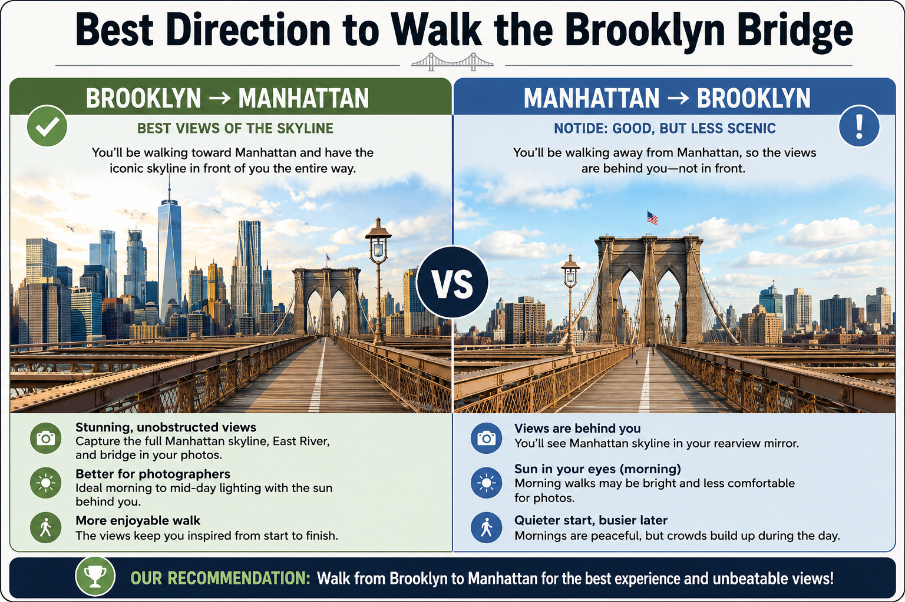
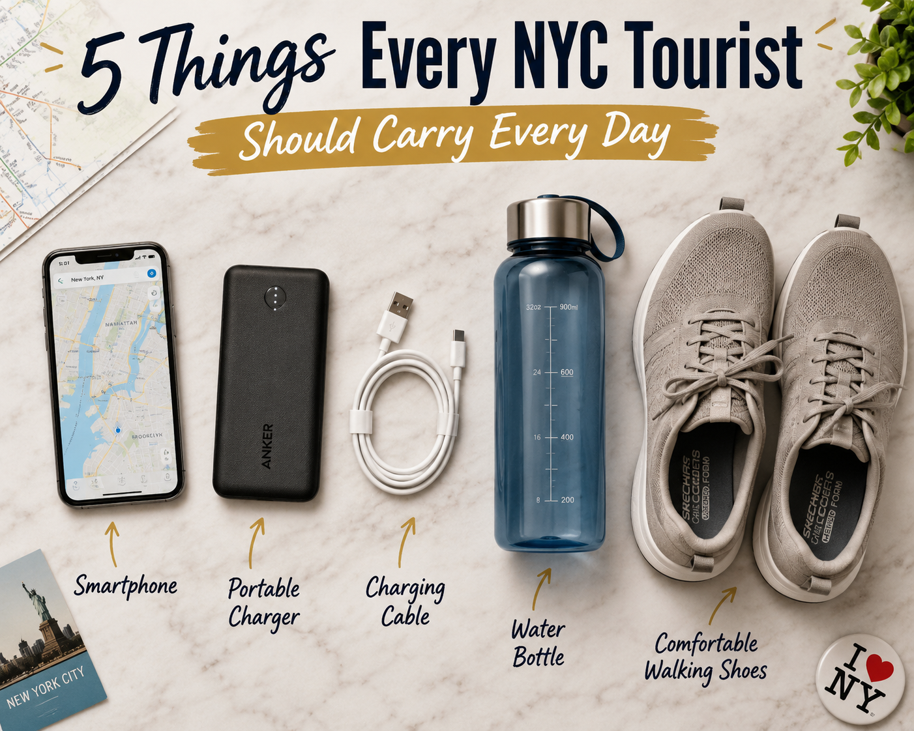

Every first-time visitor arrives in New York with the same thought:
"I've seen this city in hundreds of movies. I know exactly what to expect."
Then reality happens. You discover Times Square is somehow louder than expected. Google Maps tells you something is “only a 15-minute walk” — for the sixth time that day. You accidentally board a subway going the wrong direction. You spend $28 on lunch because the restaurant happened to be beside a major tourist attraction.
Welcome to New York.
The good news? Almost every first-time mistake is completely avoidable. A few simple planning decisions can save you hours of walking, hundreds of dollars, and more than a few headaches. Let's start with the mistake that causes almost every other one.
1 Trying to See Everything
This is the grandparent of all NYC travel mistakes. It usually starts innocently enough. You open Google Maps, pin twenty attractions, then proudly announce: “We'll do all of this in three days.”
No. You won't. And that's perfectly okay.
New York isn't Disney World. It isn't designed to be completed. It's a city where people live, work, and somehow continue discovering new places after decades. Trying to “finish” New York is like trying to read the internet.
Your itinerary starts looking like: 8 AM Statue of Liberty, 10:30 AM Central Park, 12 PM Empire State Building, 1:30 PM Brooklyn Bridge, 3 PM Times Square, 5 PM Broadway, 8 PM collapse into bed wondering why your feet have declared independence. That's not sightseeing. That's an endurance sport.
Choose 2–3 major attractions, one neighborhood to explore, one great meal, and one thing you didn't plan. Some of the best moments in New York aren't attractions — they're the jazz musician under Washington Square Arch, the tiny bakery that smells too good to ignore, the sunset that convinces you to sit by the river for an extra thirty minutes. Leave room for those moments.
2 Planning Your Days by Attraction Instead of Neighborhood
This mistake quietly wastes more time than almost anything else. Many first-time itineraries look like this: morning in Central Park, late morning at Brooklyn Bridge, lunch in Times Square, afternoon at Wall Street, evening at the Museum of Natural History. Congratulations — you've crossed Manhattan so many times your OMNY card deserves a loyalty award.
Plan Like a Local
Instead of chasing attractions, group them by location:
| Midtown Day | Lower Manhattan Day | Uptown Day |
|---|---|---|
| Grand Central Terminal | Battery Park | Central Park |
| Bryant Park | Wall Street | American Museum of Natural History |
| Rockefeller Center | Staten Island Ferry | The Met |
| Times Square | Brooklyn Bridge | Upper West Side |
| Broadway | DUMBO | Museum Mile |
Neighborhoods have personalities. You don't notice that if you're constantly rushing to the next attraction. Spending an afternoon wandering Greenwich Village often becomes more memorable than checking another famous landmark off your list.
3 Staying Too Far Away Just to Save a Little Money
Everyone loves saving money. But sometimes “cheap” becomes expensive. Imagine saving $40 per night on your hotel, only to spend an extra hour commuting every morning, another hour every evening, more money on transport, and less energy exploring the city. Suddenly that bargain doesn't look so impressive.
Better Budget Neighborhoods
| Neighborhood | Why It's Worth Considering |
|---|---|
| Long Island City | Excellent subway connections and often significantly cheaper than Midtown. |
| Downtown Brooklyn | Great restaurants, easy transit, and skyline views. |
| Jersey City | Good value if you're comfortable using the PATH train. |
| Upper West Side | Quieter, family-friendly, and close to Central Park. |
A hotel that's technically farther away may actually have a much faster subway connection. Always check travel time — not just miles. A 20-minute subway ride is often easier than a 15-minute taxi stuck in Midtown traffic.
4 Booking an Observation Deck Too Late
Observation decks are one of the highlights of any NYC trip. They're also one of the easiest things to mess up. Many visitors wait until they arrive before buying tickets — then they discover the sunset slots are gone, weekend availability has disappeared, or the only remaining ticket is at 1:30 PM when the skyline looks completely different.
Book early. Especially during spring, summer, holidays, and weekends. Those time slots disappear first.
Ask yourself: what do you actually want to see? If you want a photo with the Empire State Building in it — don't stand on top of the Empire State Building. Choose another deck instead. It's a surprisingly common mistake.
Read our full comparison: Edge vs Top of the Rock vs Empire State Building →
Reserve Your NYC Observation Deck Ticket
Booking ahead guarantees your preferred date and time slot — especially important for sunset visits. These options on Viator include Reserve Now, Pay Later and free cancellation on most bookings, so you can lock in your slot without commitment.
5 Walking Across the Brooklyn Bridge the Wrong Way
Most travel guides simply tell you to walk across the Brooklyn Bridge. They forget one small detail. Direction matters. A lot.
Start in Brooklyn. Walk toward Manhattan. The skyline stays directly in front of you almost the entire way. Every few minutes you'll find another incredible photo opportunity. Walk the opposite direction and you'll spend much of the journey looking away from Manhattan.
Go Early
If possible, arrive before 8:00 AM. The bridge becomes dramatically busier later in the morning. Early starts reward you with better photos, cooler temperatures, fewer crowds, and a much more relaxed experience. Your future self — and your camera roll — will thank you.

6 Accidentally Walking Into the Bike Lane
This mistake usually happens about ten seconds before someone on a bicycle rings their bell with increasing urgency. Cyclists use these lanes to commute, not just for leisurely rides. Stopping in one for a photo is a bit like parking your car in the middle of a highway because the scenery looks nice.
Places Where This Happens Most Often
- Brooklyn Bridge pedestrian walkway
- Hudson River Greenway
- Central Park loop
- DUMBO waterfront
- Around popular parks and waterfront paths
Before stopping: look around. If the ground is painted green or marked with bike symbols, move out of the lane before taking photos. The cyclists will appreciate it — more importantly, you'll avoid becoming part of someone else's unexpected travel story.
7 Stopping in the Middle of the Sidewalk
If you want to spot a first-time visitor in New York, watch what happens when they need directions. They stop instantly. Exactly where they're standing. Unfortunately, everyone behind them is still walking. New Yorkers move quickly — not because they're unfriendly, but because many of them are simply trying to get to work.
Whether you need to check Google Maps, answer a text, tie your shoe, take a photo, or discuss lunch plans — move to the side first. Better yet, step into a plaza or quieter corner. You'll also want to avoid stopping at the top of subway stairs, directly outside station exits, inside revolving doors, or in busy building entrances.
8 Underestimating Just How Much You'll Walk
Many visitors end the day with 20,000 to 30,000 steps on their fitness tracker — and they weren't even trying. Between subway stations, parks, museums, neighborhoods, and spontaneous detours, the miles add up quickly.
Pack Like Someone Who Plans to Walk All Day
- Comfortable, broken-in walking shoes (leave brand-new shoes at home)
- Blister patches or moleskin
- Reusable water bottle
- Lightweight portable charger
- Small daypack instead of a heavy shoulder bag
Quick Reality Check: Are You Planning Too Much?
| Question | If the Answer Is “Yes”... |
|---|---|
| Am I visiting more than 3 major attractions in one day? | Consider spreading them across another day. |
| Am I crossing Manhattan multiple times? | Group attractions by neighborhood instead. |
| Did I schedule every hour of every day? | Leave free time for unexpected discoveries. |
| Did I book the cheapest hotel without checking commute times? | Reconsider — you may lose valuable sightseeing time. |
| Am I relying on taxis for everything? | Learn the subway basics before your trip. |
9 Planning Every Minute of Every Day
There's something strangely satisfying about a perfectly organized itinerary — every hour accounted for, every restaurant chosen, every subway ride planned. Then you arrive in New York. Your breakfast takes longer because you discovered a bakery with a line stretching down the block. You stop to watch a saxophone player in Washington Square Park. You spend an extra hour wandering a bookstore in SoHo. Suddenly your beautifully crafted schedule has completely fallen apart.
And honestly? That's exactly how New York should be experienced.
NYC's greatest moments often happen between the attractions — a rooftop view you weren't expecting, a hidden courtyard, a film crew shooting a TV show, a neighborhood street fair, a tiny coffee shop that becomes your favorite memory of the trip. If your schedule doesn't allow for surprises, you're missing one of the city's greatest strengths.
Build your day around 2–3 major attractions, one neighborhood to explore, one restaurant you definitely want to visit, and plenty of free time. Think of your itinerary as a guide, not a contract.
10 Spending Every Meal Around Times Square
Times Square restaurants aren't necessarily terrible. They're simply designed for one thing: people who probably won't be back tomorrow. That often means higher prices, longer waits, average food, and tourist-focused menus. Meanwhile, just a few blocks away, you'll often find restaurants serving better food for less money.
Better Food Neighborhoods
| Neighborhood | What It's Known For |
|---|---|
| Chinatown | Dumplings, noodles, bakeries |
| Little Italy | Italian restaurants and desserts |
| Koreatown | Korean BBQ, fried chicken, late-night dining |
| East Village | International cuisine and casual dining |
| Greenwich Village | Cozy cafés and classic NYC restaurants |
| Chelsea Market | Variety of local vendors under one roof |
You don't need to eat at expensive restaurants to eat well in New York. Sometimes the place with plastic chairs and a line out the door serves the best meal of your trip.
Explore NYC's Best Food Neighborhoods With a Guide
A good food tour is one of the fastest ways to discover where locals actually eat — before you waste a meal on the wrong place. These are personally recommended tours with strong reviews and free cancellation options on Viator.
11 Not Understanding “Uptown” and “Downtown”
Every first-time visitor eventually has this moment. You carefully check the subway line, board the correct train, and a few stops later discover you're heading in exactly the opposite direction. The problem usually isn't the train. It's the direction.
Heading to Central Park, the Upper West Side, or Harlem? You're going Uptown. Heading toward Wall Street, Battery Park, or Brooklyn? You're going Downtown. Google Maps will tell you the direction, but paying attention to station signs before boarding stops you boarding the wrong way and adding 20–30 unnecessary minutes to your journey.
12 Ignoring the Difference Between Express and Local Trains
Many visitors panic when the subway suddenly skips their stop. Relax. Nothing has gone wrong. You probably boarded an express service.
| Local Train | Express Train |
|---|---|
| Stops at every station | Stops only at major stations |
| Better for short distances | Faster over longer distances |
Simply get off at the next stop where local and express services connect and continue your journey. It happens to everyone — even locals occasionally board the wrong train while distracted.
Install Google Maps, the official MTA App, and Citymapper. These apps provide live service changes, delays, platform information, and walking directions after leaving the station. A little preparation before arriving saves a surprising amount of stress.
13 Buying a Sightseeing Pass Before Planning Your Itinerary
Sightseeing passes can save a lot of money. They can also waste money. The difference depends entirely on how you plan your trip. Many visitors buy a pass because they assume they'll visit “everything.” Then reality happens — the weather changes, someone gets tired, or you discover you enjoy wandering neighborhoods more than standing in ticket lines.
Build Your Itinerary
List every paid attraction you actually intend to visit.
Calculate Individual Ticket Prices
Add up what each attraction would cost if bought separately.
Compare Against Pass Price
Only then will you know whether you're actually saving money.
| Your Trip | Best Option |
|---|---|
| 1–2 paid attractions | Buy individual tickets |
| 3–5 attractions | Compare CityPASS with individual prices |
| 6+ attractions | Compare Go City Explorer or All-Inclusive options carefully |
Read our complete guide on how to plan the perfect NYC itinerary →
NYC Attraction Passes on Viator
If your itinerary includes several paid attractions, these passes can offer genuine savings — but only if you actually plan to use them. Both options below include Reserve Now, Pay Later and free cancellation on eligible bookings.
Quick Checklist: Are You Making These Mistakes?
- Am I scheduling every hour instead of leaving room to explore?
- Am I planning to eat only near famous attractions?
- Do I understand the difference between Uptown and Downtown?
- Have I learned the basics of express and local subway trains?
- Have I compared attraction passes against my actual itinerary instead of buying one automatically?
14 Falling for Fake Statue of Liberty Ferry Sellers
You've made it to Battery Park. You're excited to see one of the world's most famous landmarks. Then someone approaches you: “Statue of Liberty tickets? We have the next boat. No waiting. Special price.” This is where many first-time visitors accidentally waste money.
| Ferry | Purpose | Cost |
|---|---|---|
| Statue Cruises | Official ferry to Liberty Island and Ellis Island | Paid |
| Staten Island Ferry | Public ferry passing the Statue of Liberty | Free |
If you want to step onto Liberty Island, book through the official Statue Cruises service well before your trip — especially if you're hoping to visit the pedestal or crown. If your goal is simply to enjoy fantastic views from the water, the Staten Island Ferry is one of the best bargains in New York. It costs absolutely nothing and operates throughout the day.
If someone approaches you selling ferry tickets before you've reached the terminal, politely decline and keep walking. Head directly to the official ferry terminal instead. You'll avoid confusion, unnecessary upselling, and the stress of wondering whether you've purchased the right ticket.
Statue of Liberty & Ellis Island Tours
Booking in advance guarantees entry and helps visitors avoid sold-out dates during busy travel periods. Popular access options like the pedestal and crown sell out weeks ahead. Booking through Viator also gives you Reserve Now, Pay Later and free cancellation on eligible bookings.
Browse Statue of Liberty Experiences15 Assuming Every Pizza Slice in NYC Is Amazing
New York pizza deserves its legendary reputation. That doesn't mean every slice you see is legendary. One mistake first-time visitors make is walking into the first pizza shop they spot because, well — “It's New York. The pizza must be incredible.” Sometimes that's true. Sometimes it's simply the closest restaurant to Times Square.
Look for places where local office workers are eating lunch, people are ordering whole pies, and the menu isn't trying to serve sushi, burgers, tacos, and cheesecake alongside pizza. And don't become obsessed with finding the single “best” slice in New York — ask ten New Yorkers and you'll probably get twelve different answers.
16 Eating Right Beside Major Attractions
Restaurants directly beside major attractions often charge more simply because of where they are — near the Empire State Building, Rockefeller Center, Battery Park, Central Park South, or Madison Square Garden. You're paying for convenience, not necessarily quality.
If every menu outside a restaurant contains giant glossy photos of food — keep walking. Many of New York's best restaurants don't need to advertise that aggressively. The line outside usually does it for them. Walk five or ten minutes and you'll often find better reviews, lower prices, shorter waiting times, and more authentic neighbourhood restaurants.
17 Forgetting That New York Is a Working City
Many visitors treat Midtown Manhattan like one giant theme park. For millions of New Yorkers, it's Tuesday morning and they're trying to get to work. Meanwhile, tourists are stopping at the top of subway stairs because Google Maps finally loaded.
Sidewalk Rules
Move aside before stopping. Avoid spreading across the entire sidewalk in a large group. Keep moving until you're clear of the subway entrance before checking directions.
Escalator Etiquette
Stand on the right if you're not walking. Leave the left side clear for people in a hurry. Also: always let subway passengers exit before you board.
After reading seventeen mistakes, New York might sound intimidating. It isn't. Most people are surprisingly helpful — as long as you ask respectfully and understand they're often busy. Just don't expect someone sprinting through Grand Central during rush hour to stop for a ten-minute conversation.
Quick Checklist
- Do I know which ferry I actually want?
- Am I avoiding restaurants beside major attractions?
- Do I understand basic sidewalk etiquette?
- Do I know to let subway passengers exit first?
- Have I planned to walk a few blocks for better food?
18 Assuming the Subway Is Dangerous and Avoiding It Completely
If you've never been to New York before, there's a good chance you've seen dramatic headlines or movies that make the subway seem like somewhere you should avoid. Then you arrive. You step onto a train. And you discover something surprising — most of the people around you are simply trying to get to work, school, dinner, or home after a long day.
Stay aware of your surroundings. Keep your valuables secure. Avoid displaying large amounts of cash. If one subway car feels unusually empty while every other car is busy, choose a different one. Most rides are completely uneventful — your biggest challenge will probably be deciding which exit to take.
A taxi looks convenient until you're sitting in Midtown traffic watching three subway trains pass underneath you. During rush hour especially, the subway is often the quickest way to get around Manhattan. The sooner you become comfortable using it, the more enjoyable your trip becomes.
19 Stopping for Every Street Hustler
One thing you'll notice quickly in busy tourist areas is that someone always wants your attention — handing out CDs, offering bracelets, insisting they're “not selling anything,” or wanting you to take a photo with a costumed character. None of these situations are necessarily dangerous. But many become awkward — and sometimes expensive — if you don't know what's happening.
If you aren't interested — keep walking. Politely. Confidently. You don't need to explain yourself. You don't need to apologize. You definitely don't need to stop just because someone says “Hey my friend!”
Read the full guide: NYC Scams Tourists Still Fall For (And How to Walk Right Past Them) →
One interesting thing happens after a day or two in New York. You naturally start walking with more purpose. Street promoters seem to approach you less — because people who know exactly where they're going are usually less likely to stop. Even if you're secretly checking Google Maps every three minutes.
20 Letting Your Phone Die Before Dinner
Your phone works harder in New York than almost anywhere else: Google Maps, subway directions, attraction tickets, restaurant reservations, photos, videos, weather, finding your hotel. By late afternoon, your battery is at 12%. Unfortunately, that's often when you need it most.

Carry a Portable Charger
One of the cheapest travel purchases you'll ever make. Instead of hunting for cafés with power outlets, you'll simply plug in while walking between attractions.
Download Before You Leave Your Hotel
Save attraction tickets to your phone. Download offline Google Maps for Manhattan. Screenshot hotel directions. Save important reservation confirmations. And bring your charging cable in your day bag — not on the bedside table.
21 Forgetting That New York Weather Can Change Fast
A sunny morning can easily become an afternoon thunderstorm. A cool spring morning can feel surprisingly warm after several hours of walking. Winter temperatures can feel much colder once wind starts rushing between skyscrapers.
Dress in Layers
Lightweight base layer, sweater or hoodie, waterproof outer layer if rain is possible. You'll be far more comfortable adjusting throughout the day.
Summer Visitors
The combination of heat, humidity, concrete, and long walking distances can become surprisingly exhausting. Carry a reusable water bottle and don't wait until you're already thirsty.
Instead of letting bad weather ruin your day, have a second itinerary ready. Great rainy-day options: The Met, AMNH, Grand Central Terminal, Chelsea Market, New York Public Library, MoMA, and indoor observation decks. You'll feel much less stressed knowing your day doesn't depend entirely on sunshine.
Quick Checklist: Are You Prepared?
| Item | Packed? |
|---|---|
| Fully charged phone | ☐ |
| Portable charger | ☐ |
| Water bottle | ☐ |
| Comfortable walking shoes | ☐ |
| Weather checked | ☐ |
| Attraction tickets downloaded | ☐ |
| Rain backup plan | ☐ |
22 Spending Your Entire Trip in Times Square
You absolutely should visit Times Square. It's loud. It's chaotic. It's ridiculously bright. It's one of those places that somehow feels exactly like the movies and completely different at the same time. Go. Take the photos. Look up at the giant billboards. Experience it once during the day and once after dark. Then… leave.
For most visitors: 30–60 minutes is plenty. Maybe a little longer if you're seeing a Broadway show nearby. After that, your time is usually better spent exploring neighborhoods with actual personality. Times Square is a crossroads. The real New York begins once you walk away from it.
23 Ignoring NYC's Best Neighborhoods
Ask someone who has visited New York five or six times what they remember most. It usually isn't standing in Times Square. It's wandering — a quiet street in Greenwich Village, a tiny bookstore in the East Village, watching the skyline from Brooklyn Bridge Park, discovering an incredible bakery that never appeared in any guidebook.
| Neighborhood | Why You'll Love It |
|---|---|
| Greenwich Village | Tree-lined streets, jazz clubs, cafés and classic New York charm. |
| West Village | Brownstones, boutique shopping and some of the city's prettiest streets. |
| SoHo | Cast-iron architecture, shopping and great people-watching. |
| DUMBO | Iconic skyline views, Brooklyn Bridge Park and waterfront walks. |
| Chelsea | High Line, Chelsea Market and excellent restaurants. |
| Lower East Side | Food, nightlife and fascinating immigrant history. |
| Upper West Side | Relaxed atmosphere, museums and Central Park. |
Don't rush through these places. Walk slowly. Look down side streets. Pop into independent shops. Order coffee somewhere that wasn't on your itinerary. That's where New York starts feeling less like a destination and more like a city.
24 Taking Taxis Everywhere
Yellow taxis are everywhere. Problem solved. Until you're sitting in traffic while pedestrians are overtaking you on foot.
When Taxis Make Sense
Heavy luggage, young children, late-night travel, splitting the fare with a group, or travelling between places with poor transit connections.
When the Subway Wins
For most trips within Manhattan: the subway is faster, cheaper, more predictable, and immune to traffic. Learning just a few subway basics will probably save you hours over the course of a week.
25 Thinking One Trip Is Enough
People arrive believing they need to experience everything because: “Who knows if I'll ever come back?” That pressure leads to packed schedules, exhaustion, constant rushing, and the feeling that you're somehow “failing” if you don't visit every attraction.
Here's the truth. Nobody sees everything. Not first-time visitors. Not repeat visitors. Not even people who have lived in New York for decades. The city keeps changing — new restaurants open, neighborhoods evolve, new observation decks appear, Broadway shows come and go. There's always another reason to return.
Instead of trying to complete New York — enjoy the New York you have time to experience. If your trip leaves you wanting to come back someday, you've done it right.
Quick Reference: The Biggest Mistakes at a Glance
The Biggest Money-Wasting Mistakes
| Mistake | Better Alternative |
|---|---|
| Staying far outside Manhattan to save a little money | Choose a well-connected neighbourhood instead. |
| Buying attraction passes without planning | Build your itinerary first, then compare costs. |
| Eating beside famous attractions | Walk 10–15 minutes into nearby neighborhoods. |
| Booking observation decks at the last minute | Reserve popular time slots weeks ahead. |
| Taking taxis everywhere | Use the subway whenever practical. |
The Mistakes That Annoy Locals the Most
- Stopping in the middle of busy sidewalks
- Blocking subway doors
- Standing at the top of subway stairs while checking Google Maps
- Walking four people across on a narrow sidewalk
- Standing on the left side of escalators
- Taking photos in bike lanes
- Boarding the subway before passengers have exited
First-Time NYC Survival Checklist
- Choose attractions by neighborhood, not popularity
- Book popular attractions in advance
- Decide whether a sightseeing pass actually saves money
- Check sunset times for observation decks
- Plan at least one flexible afternoon
- Comfortable walking shoes
- Portable charger
- Reusable water bottle
- Lightweight rain jacket or umbrella
- Small backpack or day bag
- Learn Uptown vs. Downtown
- Understand express vs. local trains
- Add a contactless payment method for OMNY
- Download Google Maps and the MTA app
- Walk away from tourist hotspots before choosing a restaurant
- Keep moving on busy sidewalks
- Ignore aggressive street sellers
- Slow down and enjoy the neighborhoods between attractions
Frequently Asked Questions
Is New York safe for first-time tourists?▾
How many days should I spend in NYC?▾
Is the NYC subway difficult to use?▾
Is Times Square worth visiting?▾
Should I buy a sightseeing pass?▾
What's the biggest mistake first-time NYC visitors make?▾
Explore All of Our NYC Travel Articles
If you found this guide helpful, don't stop here. We have guides designed to help first-time visitors make the most of every day in the city without wasting time — or money.
Check Out All Our NYC Travel Articles